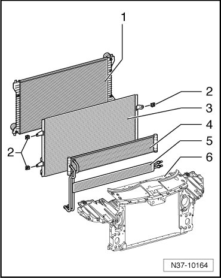
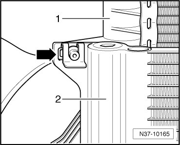
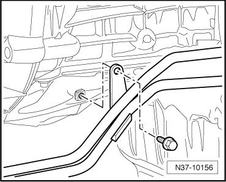

ATF Cooler and Lines
ATF Cooler and Lines
Removing

1 Cooler for coolant
2 Retaining clamps
3 Condenser
4 Automatic Transmission Fluid (ATF) cooler
5 Cooler for power steering
6 Lock carrier
- Remove the noise insulation under the engine.
- Remove front bumper.
- Bring the lock carrier into service position.Radiator Support
- Remove bolt - 1 - and pull ATF lines out from the thermostat - 2 -.

- Plug ATF lines and thermostat with clean plugs.
- Remove front ATF lines to ATF cooler at thermostat - 2 -. For this, counter hold at thermostat.
- Plug ATF lines and thermostat with clean plugs.
- Loosen clamps - arrow - for condenser - 1 - and ATF cooler - 2 -.

- Remove ATF cooler with lines.
- Remove ATF lines at ATF cooler. For this, counter hold at ATF cooler.
- Plug ATF lines and ATF cooler with clean plugs.
- Remove bolt for ATF line retainer on right of engine.
- Remove bolt for ATF line retainer on transmission.

- Remove ATF lines from transmission.

- Plug ATF lines and transmission with clean plugs.
Installing
Installation is performed in the reverse order of removal. Pay attention to the following:
- Lubricate O- rings with ATF.
- Remove plugs and insert ATF lines into transmission up to limit stop.
- Fasten the bolt.
- Fasten bolt for ATF line retainer on transmission.
- Fasten bolt for ATF line retainer on right of engine.
- Remove plugs and fasten ATF lines at ATF cooler and thermostat.
- Install condenser - 1 - and ATF cooler - 2 -.
- Install clamps - arrow -.
- Remove plugs, insert ATF lines completely into the thermostat - 2 - and fasten bolt - 1 -.
- ATF level, checking and topping off. Refer to --> [ ATF Level Checking and Filling ] ATF Level Checking and Filling.
- Check connections of ATF lines for leaks while checking ATF level.
- Install lock carrier.
- Install front bumper.
- Install noise insulation under engine.